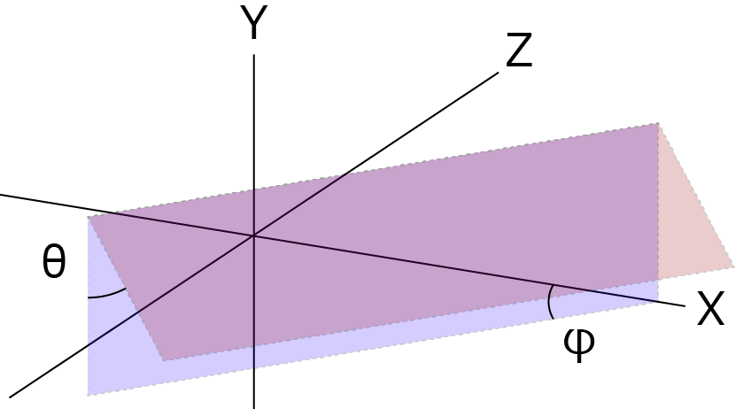

斜め上から波形を描画する方法-01
なぜ３D？
３Dソフトやゲームなど現在当たり前のように使われていますが，生命科学の分野ではそれほど一般化されていないようです．
たとえば，立方体などの単純な図形の場合はまあまあ簡単に２Dのアプリで描画できますが，
正弦波
などは，真横からの描画は比較的簡単ですが，斜め上，からの描画は結構大変です．
たとえば，
Wiki，光学総合サイト，ＦＮの高校物理
など．
このような正弦波などのカーブを斜め上から見たときのトレースを描画するにはどのようにしたらよいでしょう？
それは，
３Dの物体を２Dに投影して描画する
ということなのですが，きちんと計算で考えてみましょう．
なお，今回は遠近法の考慮は行っておりません．
と言うのも，科学で使う概念図にはあまり遠近法的概念は必要ないと個人的に思っているからです．
遠近法を用いるとより現実に近い描画可能ですが，奥の方の物体が小さくなりすぎて詳細がわかりづらくなってしまう恐れがあると思っています．
概念図

まず，上図のようなXYZ空間を考えます．
X軸からφ傾いたXZ軸に垂直な平面（青色）を考えます．
そこから，θだけ傾いた平面（紫色）を考えます．
観察者はこの紫色の平面に垂直の位置からこのXYZ空間を観察することとします．